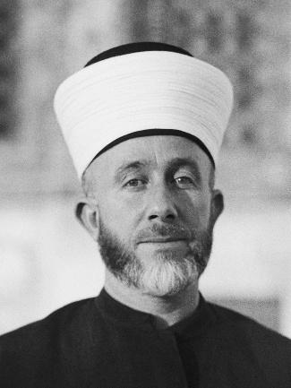
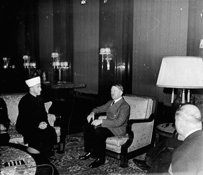
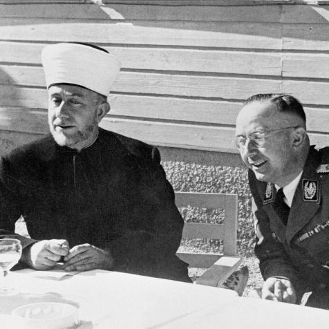
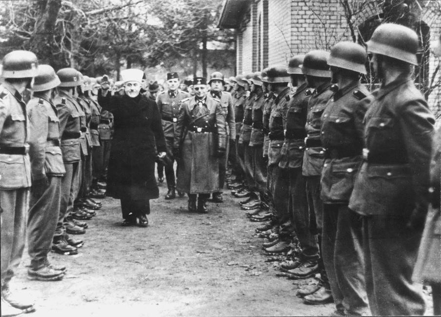
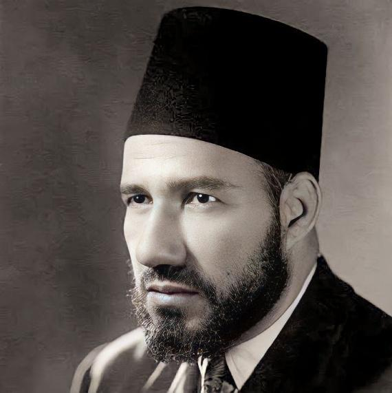
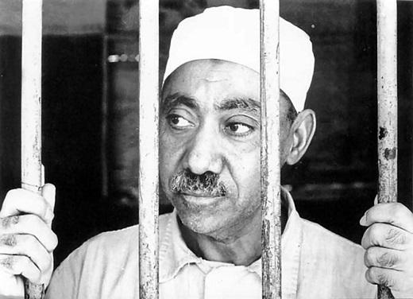

de base à ma Conférence prononcée le 11 avril 2024 à Paris, au colloque organisé par l’association Dhimmi Watch sur le thème « La France après le 7 octobre »
Par Pierre-André Taguieff
11 avril 2024
Ce qu’on appelle « terrorisme », aujourd’hui, est principalement illustré par les actions criminelles des jihadistes, dont les principales cibles sont « les « chrétiens » (ou « l’Occident ») et « les Juifs (ou « les sionistes »). En France tout particulièrement, le terrorisme palestinien ou islamo-palestiniste est le nouveau visage du terrorisme depuis le début des années 1980. Le 3 octobre 1980, à Paris, un attentat à la bombe fut perpétré contre la synagogue de la rue Copernic, faisant quatre morts et quarante-six blessés. L’enquête conduisit à désigner un commando du FPLP-OS (Front populaire de libération de la Palestine-Opérations spéciales), comprenant l’activiste Hassan Diab, comme le responsable de l’attentat antijuif.
Depuis, les auteurs des attentats islamo-terroristes qui ont eu lieu ont souvent mis en avant la lutte contre Israël et « le sionisme ». En mars 2012, le jihadiste Mohamed Merah a déclaré ainsi qu’en assassinant des enfants juifs, il avait voulu « venger les enfants palestiniens ». En janvier 2015, le jihadiste Amedy Coulibaly a déclaré qu’il avait voulu « venger ses frères musulmans » et plus précisément les « musulmans opprimés », notamment « en Palestine ».
C’était là faire écho à la propagande jihadiste qui justifie l’assassinat de Juifs au nom de la cause palestinienne, érigée en cause des victimes par excellence, les Palestiniens (supposés musulmans), ces derniers étant les victimes des « fils des singes et des porcs » selon le stéréotype antijuif bestialisant transmis par la tradition islamique.
On néglige trop souvent le fait que le terrorisme antijuif se réclamant de la cause palestinienne est fortement idéologisé et qu’il a une histoire complexe, puisqu’il est le produit de croisements successifs du nationalisme palestinien et de l’islamisme à dominante jihadiste, mais aussi d’emprunts au nazisme et au communisme soviétique, qui lui donnent notamment son style « révolutionnaire ». Il n’est pas de violence terroriste sans modes de légitimation de cette violence.
Le terrorisme jihadiste doit donc être compris comme le passage à l’acte d’un fanatisme particulier, lui-même inséparable d’une configuration idéologique dans laquelle l’ennemi absolu est incarné par « les Juifs », « le Juif » (« le Juif international ») ou « le sionisme mondial », mais aussi les « judéo-croisés » ou l’« alliance judéo-croisée », alliance fantasmée également sous le nom de l’« axe américano-sioniste ».
L’État d’Israël, les Juifs, le « sionisme mondial », les démocraties occidentales et leurs institutions, à commencer par les écoles, constituent les cibles principales du terrorisme jihadiste, dont l’islamo-palestinisme est une variante.
La centralité du jihad
Il ne faut pas sous-estimer l’influence des idées sur le cours de l’histoire, et ce principe méthodologique vaut pour les approches des régimes totalitaires comme pour celles de phénomènes tels que les révolutions, les guerres ou le terrorisme. Dans le monde humain, la violence est inséparable des mondes culturels et idéologico-politiques, dans lesquels les croyances religieuses et leurs instrumentalisations jouent souvent un rôle majeur. On ne peut la rapporter simplement à des intérêts en conflit ni à des passions comme la colère, la haine, le ressentiment ou le désir de vengeance, en oubliant que ces passions sont elles-mêmes des produits historiques et culturels. Il en va ainsi de cette forme de guerre – mondiale ou globalisée – qu’est le terrorisme islamiste, qu’il faut comprendre comme la mise en pratique de la doctrine du jihad.
Or, c’est un fait que l’appel au jihad, comme méthode de purification et de régénération du monde musulman, est devenu central dans le discours islamiste, en même temps qu’a été lentement réinventée, à partir du début des années 1920, la vieille « question juive », devenue la « question sioniste ». Quoi qu’il en soit, c’est une lourde erreur, malheureusement courante, que de voir dans les attaques jihadistes sanglantes des « actes barbares inexplicables ».
Étudier la genèse de l’islamo-palestinisme, cas particulier de l’islamo-nationalisme arabe, en s’interrogeant sur son orientation et ses pratiques jihadistes, c’est commencer par examiner ses trois sources idéologiques, incarnées respectivement par trois personnages dont l’influence est toujours observable.
En premier lieu, le « Grand Mufti » (al-Mufti al-Akbar) de Jérusalem, Mohammed Amin al-Husseini (1895- 1974), dit Haj Amin al-Husseini, considéré comme « le premier défenseur de la cause palestinienne », qui, entre 1936 et 1939, s’est imposé comme « la voix politique du peuple arabe de Palestine », tout en s’engageant, fin mars 1933, aux côtés de l’Allemagne nazie dans la lutte antijuive. Après avoir été impliqué dans le coup d’État antibritannique et pronazi de Rashid Ali al-Gaylani en Irak (1er avril 1941), il se rallie officiellement à la politique antijuive de Hitler au point de s’installer à Berlin le 6 novembre 1941, d’avoir avec le Führer un premier entretien le 28 novembre et de contribuer ensuite à la propagande pronazie en direction des pays musulmans.




Le 1er mars 1944, dans son émission retransmise par la radio nazie de Berlin, al-Husseini, désireux d’étendre au Moyen-Orient les exterminations de masse conduites par les nazis, incitait les Arabes musulmans au meurtre des Juifs au nom d’Allah:
« Arabes, levez-vous comme des hommes et combattez pour vos droits sacrés. Tuez les Juifs partout où vous les trouvez. Cela plaît à Dieu, à l’Histoire et à la religion. Cela sauve votre honneur. Dieu est avec vous ».
Il faut mentionner, en second lieu, le co-fondateur en 1928 des Frères musulmans, Hassan al-Banna (1906- 1949), qui, en 1943, enseignait que « le degré le plus élevé » du jihad est « la lutte armée pour la cause d’Allah ». La devise des Frères a été tirée d’un passage d’une lettre d’al-Banna:
« Dieu est notre but, le Prophète notre chef, le Coran notre constitution, le jihad notre voie, le martyre notre espérance ».

Depuis le début des années 1930, al-Banna avait entretenu des « relations cordiales » avec le « Grand Mufti » et fait, comme ce dernier, de la cause palestinienne « l’un des thèmes centraux de sa propagande politique », comme le souligne Henry Laurens.
Mais il ne faut pas oublier l’exploitation par cette propagande de la mystique jihadiste dont al-Banna a donné la formulation canonique. En 1937-1938, en forgeant l’expression « industrie de la mort », al-Banna se proposait en effet d’expliquer ce qu’il fallait entendre par « jihad », érigé en devoir et en idéal pour tout musulman:
« À une nation qui perfectionne l’industrie de la mort et qui sait comment mourir, Dieu donne une vie fière dans ce monde et la grâce éternelle dans la vie à venir ».
L’engagement dans le jihad apparaît ainsi inséparable de l’exercice d’un « art de la mort ». Ce qu’on appelle le « terrorisme palestinien » ne fait qu’illustrer cette fabrique de « martyrs » (shahid) qu’est le jihad.
En troisième lieu, on doit souligner le rôle joué par le théoricien du « combat contre les Juifs » et l’auteur du livre culte Signes de piste (1964) que fut le Frère musulman Sayyid Qutb (1906-1966), considéré comme le père du fondamentalisme islamique (ou de l’islamisme radical), le « philosophe de la terreur islamique » ou le « parrain intellectuel d’Oussama Ben Laden ».

Dans ses appels au jihad, le chef charismatique d’Al-Qaïda citait souvent Ibn Taymiyya (1263-1328), le lointain inspirateur du jihadisme rédempteur:
« Se battre en défense de la religion et de la foi est une obligation collective; il n’est pas d’autre devoir après la foi que celui de combattre l’ennemi qui corrompt la vie et la religion ».
Ibn Taymiyya considérait le jihad comme « l’une des œuvres des plus méritoires qui soient » et résumait ainsi sa pensée: « Les deux piliers de la religion sont le Livre et le sabre ». Son influence sur al-Banna et Qutb comme sur d’autres idéologues islamistes a été profonde.
Ils ont notamment retenu des enseignements du « cheikh de l’islam » l’idée simple selon laquelle, dans tous les cas, « l’islam est la solution », mais aussi l’horizon ainsi fixé dans le credo des Frères musulmans:
« Je crois que (…) la bannière de l’islam doit couvrir le genre humain et que chaque musulman a pour mission d’éduquer le monde selon les principes de l’islam. Et je promets de combattre pour accomplir cette mission tant que je vivrai et de sacrifier pour cela tout ce que je possède ».
C’est l’enseignement de ces trois « maîtres à penser » aux figures de prophètes qui s’est traduit par la formation de l’antisionisme radical, idéologie politico-religieuse jouant le double rôle, pour ses adeptes, d’une conception polémique du monde (centrée sur le grand combat entre l’Islam et ses ennemis) et d’un programme d’action à valeur rédemptrice (l’objectif final étant la création d’un monde intégralement islamisé).
Dans l’antisionisme radical dont la visée est la destruction d’Israël et qu’on peut décrire comme une religion politique ou une gnose moderne, on trouve donc une vision manichéenne et guerrière du monde ainsi qu’un projet de domination mondiale par la conversion, la soumission (le statut de dhimmi) ou l’extermination des ennemis.
La centralité du jihad, et du jihad offensif, a été théorisée par le prédicateur et idéologue islamiste palestinien Abdallah Azzam (1941-1989), baptisé « l’imam du jihad » par ses compagnons de combat. Azzam, qui fut le maître à penser des fondateurs d’Al-Qaida mais aussi des islamistes palestiniens, s’adressait ainsi aux musulmans dans les années 1980:
« Ô musulmans, votre vie c’est le jihad, votre fierté c’est le jihad, votre existence est liée essentiellement au jihad. Ô vous qui prêchez l’islam, vous ne servez à rien sous le soleil sauf si vous dégainez vos armes et éliminez les tyrans, les infidèles et les oppresseurs. Ceux qui croient que la religion de Dieu puisse vaincre sans le jihad, sans combat, sans effusion de sang, ceux-là sont dans l’illusion et ne saisissent pas la vraie nature de cette religion ».
Les héritiers palestiniens par excellence d’al-Husseini et d’al-Banna ne sont autres que les fondateurs du « Mouvement de la résistance islamique », le Hamas, qui, lancé peu après le déclenchement de la première Intifada (le 9 décembre 1987) par le cheikh Ahmed Yassine (1937-2004), se présente comme l’« une des branches des Frères musulmans en Palestine », selon l’article 2 de sa Charte.
On connaît la prophétie menaçante d’al-Banna qu’on trouve citée dans le préambule de ladite Charte, rendue publique le 18 août 1988: « Israël s’élèvera et restera en place jusqu’à ce que l’Islam l’élimine, comme il a éliminé ses prédécesseurs ».
Khalil Koka, l’un des fondateurs du Hamas, a exposé sans fard la vision islamo-palestiniste de la nouvelle « question juive » au Moyen-Orient: « Dieu a rassemblé les Juifs en Palestine non pas pour leur offrir une patrie, mais pour y creuser leur tombe et débarrasser le monde de leur présence polluante ».
Le méga-pogrom du 7 octobre 2023 n’a pas été une simple flambée de haine contre des Israéliens en train de faire la fête, ni un acte de guerre contre des ennemis. Elle a fourni l’image d’un ensemble de meurtres rituels, commis avec une sauvagerie codifiée (viols, corps démembrés, nourrissons et enfants égorgés ou décapités, femmes enceintes éventrées, etc.), exprimant un désir de génocide des Juifs, jugés indignes d’exister.
Dans leur essai publié en 1944, « Éléments de l’antisémitisme. Limites de la raison », Max Horkheimer et Theodor W. Adorno notaient justement :
« L’antisémitisme est un schéma bien rodé, un rituel de la civilisation et les pogromes sont de véritables meurtres rituels ».
La vision complotiste de Sayyid Qutb et ses disciples
Le postulat de la vision islamiste radicale, telle qu’elle s’est formée au cours des deux derniers tiers du XXe siècle, est qu’il existe un grand complot contre l’Islam et les musulmans, lequel explique le « déclin » de la civilisation islamique. Une fois que ce postulat est accepté, et devient un dogme fondateur, l’appel au jihad va de soi: les musulmans ont le devoir de combattre ceux qui combattent leur foi, ceux qui menacent leur existence même en tant que croyants.
C’est al-Banna qui a, le premier, donné une élaboration doctrinale à cette vision d’un déclin historique expliqué par un complot permanent, vision décliniste et conspirationniste assortie d’une utopie de la « renaissance » ou de la « régénération » du monde musulman par le jihad purificateur.
Dans son sillage, le Frère musulman Qutb a défini les deux principales cibles du jihad rédempteur: l’Occident et les Juifs. Le « parrain » du salafisme combattant, théoricien du jihad contre les Juifs et de la judéophobie apocalyptique dont Al-Qaïda a recueilli l’héritage, se référait au Coran pour dénoncer les Juifs comme des êtres intrinsèquement pervers et haineux, criminels et comploteurs, comme dans ce passage de Notre combat contre les Juifs:
« Le Coran a beaucoup parlé des Juifs et a mis en évidence leur méchanceté. Partout où les Juifs ont demeuré ils ont commis des abominations sans précédent. De la part de telles créatures, qui tuent, massacrent et diffament les prophètes, on ne peut attendre que des bains de sang et toutes les méthodes répugnantes par lesquelles ils accomplissent leurs machinations ».
Pour l’idéologue islamiste radical, la haine de l’islam portée par les Juifs ne se distingue pas de la haine du genre humain, s’il est vrai que l’humanité véritable est représentée par les musulmans, ou incarnée par la Communauté musulmane (oumma):
« La Communauté musulmane continue de souffrir des mêmes machinations et de la même duplicité juives qui ont déconcerté les premiers musulmans. (…) Les Juifs continuent, par leur méchanceté et leur duplicité, à éloigner cette Communauté de sa Religion et à la rendre étrangère à son Coran. (…) Tous ceux qui éloignent cette Communauté de sa Religion et de son Coran ne peuvent être que des agents juifs, qu’ils agissent sciemment ou non ».
La dernière phrase de ce passage du « Mein Kampf » de Qutb est très significative, en ce qu’elle illustre un procédé rhétorique qu’on rencontre souvent dans le discours polémique: l’élargissement de la cible de la stigmatisation ou de la dénonciation, aboutissant à la redéfinition de l’ennemi. Elle revient ici à passer de l’énoncé du type « tous les Juifs sont des criminels » à l’énoncé du type « tous les criminels sont des Juifs ». Dans la phrase de Qutb, on glisse de « tous les Juifs sont des anti-musulmans » à « tous les anti-musulmans sont des Juifs » (ou des « agents juifs »).
Oussama Ben Laden, vers le milieu des années 1990, a fait de ce postulat conspirationniste ou panekhthriste (« L’Islam est partout entouré d’ennemis ») et de sa conclusion jihadiste (il faut tuer tous les ennemis) les deux thèmes majeurs de sa propagande. On peut ainsi résumer, selon Jean-Pierre Filiu, sa vision du jihad comme obligation religieuse:
« L’Islam est partout assiégé, agressé et spolié, l’offensive “judéo-croisée” est planétaire et appelle une mobilisation de l’ensemble des musulmans ».
J’emprunte le néologisme « panekhthrisme » (du grec ekhthros: « ennemi ») à l’historien Maxime Rodinson, qui désignait par ce terme un phénomène anthropologique très général, d’ordre psychosocial, pouvant prendre la forme d’une vision mythique:
« Tout peuple, tout groupe social tend à voir dans les attaques dont il est l’objet – voire dans les résistances à ses propres attaques – les manifestations d’une haine gratuite du reste de l’humanité envers lui, d’une conjuration universelle du Mal contre le Bien qu’évidemment il représente ».
Dans une perspective voisine, Léon Poliakov a conceptualisé ce qu’il a appelé la « causalité diabolique », modèle explicatif des haines antijuives idéologisées, dans lesquelles « le Juif », figure essentialisée, est l’incarnation du diable. Prenons un exemple dans la culture populaire du monde arabo-musulman. Le comédien égyptien Mohamed Sobhi est la star et le coscénariste de la célèbre série égyptienne Le Cavalier sans monture, diffusée durant le ramadan à partir du 6 novembre 2002, et dont le thème, s’inspirant explicitement des Protocoles des Sages de Sion, est la conspiration sioniste visant à contrôler le monde.
Cette série a été suivie par des dizaines de millions de personnes. Dans une interview, le comédien engagé Sobhi a déclaré que les Protocoles « révèlent les plans sionistes pour s’emparer de la Palestine ».
Lecteur admiratif du pamphlet antijuif de l’Égyptien Abbas Mahmoud al-Aqqad, Le Sionisme mondial (Le Caire, 1956), qui contenait le texte du faux antijuif, Sobhi, assumant sa vision complotiste du monde, n’a pas hésité à affirmer avec autorité sur la chaîne Al-Jazira en octobre 2002: « Le sionisme existe et contrôle le monde depuis l’aube de l’histoire ».
L’islamisme par-delà le nationalisme
Il importe d’écarter un malentendu sur ce qu’on appelle le « nationalisme palestinien », présenté et célébré trompeusement comme un « nationalisme de libération ». En effet, la nation n’a pas de sens pour les islamistes dits radicaux qui, adeptes d’une vision dualiste et manichéenne, divisent le monde en deux camps, comme le faisait l’idéologue islamiste égyptien Sayyid Qutb en 1962:
« Il existe deux camps dans le monde: le parti d’Allah et celui de Satan; le parti d’Allah qui se tient sous la bannière d’Allah et porte ses insignes, et le parti de Satan, qui comprend tous les groupes, communautés, races et individus qui ne se tiennent pas sous la bannière d’Allah ».
L’activiste islamiste britannique Abu Yahya (Rahman Yahyaei), proche du prédicateur jihadiste Abu Hamza al-Masri (Moustafa Kamel Moustafa), s’est montré fort clair sur la question en 2001:
« Nous ne connaissons pas d’autre allégeance qu’envers Allah et son messager; nous ignorons celle qui s’adresse à la reine et au pays. La nationalité ne signifie rien ».
Son compagnon de combat Anjem Choudary a déclaré dans le même sens: « Pour un authentique musulman, un passeport anglais n’est rien qu’un titre de voyage ».
Dans la vision islamiste du monde, il n’y a donc pas de place pour la nation et le nationalisme, si ce n’est dans une perspective tactico-stratégique, celle qui a été définie et mise en œuvre par le « Grand Mufti » Haj Amin al-Husseini, l’inventeur du national-islamisme palestinien, et Hassan al-Banna.
Elle consiste à mettre les passions nationalistes au service de la guerre de l’islam contre le monde des « mécréants » (kouffar). C’est ainsi que le « nationalisme palestinien » doit être compris ou plus exactement décrypté: il n’est que la vitrine « anti-impérialiste » ou « anticolonialiste » d’un national-islamisme de circonstance, qui lui-même prend son véritable sens dans la guerre totale engagée par les panislamistes pour l’islamisation du monde, dont Qutb a été le principal théoricien.
Mais le « Grand Mufti » avait exposé à plusieurs reprises sa vision du jihad contre les Juifs. Répliquant à un discours prononcé le 17 juin 1943 par le dirigeant sioniste Chaïm Weizmann, al-Husseini s’était montré fort clair: « Ce n’est pas seulement un combat entre les Juifs et les Arabes de Palestine, c’est aussi un combat entre les Juifs et 70 millions d’Arabes et 400 millions de musulmans ». Ce jumelage du panarabisme et du panislamisme était au cœur de l’idéologie du fondateur de l’islamo-nationalisme palestinien, qui désignait les Juifs comme incarnant l’ennemi absolu.
L’idéologue islamiste qui, du début des années cinquante à sa mort, a transmis l’héritage politico-religieux des Frères musulmans en le systématisant et en l’adaptant à la situation nouvelle instaurée par la création d’Israël en 1948, est Sayyid Qutb, auteur en 1950 d’un opuscule intitulé Notre combat contre les Juifs.
Dans ce pamphlet antijuif d’inspiration complotiste, Qutb s’inspire notamment des Protocoles des Sages de Sion dont il réinterprète cependant le contenu: il transforme le grand complot antichrétien fomenté par les Juifs en un vaste complot islamophobe organisé par les chrétiens et les Juifs.
Anticommuniste autant qu’antilibéral, mais surtout anti-occidental, Qutb suppose ainsi l’existence d’une « conspiration judéo-chrétienne contre l’Islam », affirmant que, confronté à « ceux qui ont usurpé la souveraineté d’Allah sur la terre », « l’Islam » doit procéder « à leur destruction afin de libérer les hommes de leur pouvoir », et ajoute que « le combat libérateur du jihad ne prendra pas fin tant que la religion d’Allah ne sera pas la seule ».
L’enseignement de Qutb est parfaitement conforme à celui d’al-Banna. On lit dans le point 5 du credo des Frères musulmans, entériné par le IIIe Congrès des Frères en mars 1935: « La bannière de l’Islam doit couvrir le genre humain. »
Déjà, en août 1937, dans son « Appel au monde islamique » – publié l’année suivante en allemand à Berlin dans une brochure du NSDAP intitulée Islam – Judentum – Bolschewismus –, le « Grand Mufti » avait joué de l’ambiguïté de la « cause palestinienne » qu’il prétendait incarner, mêlant le nationalisme palestinien, le nationalisme arabe et le panislamisme jihadiste, comme en témoigne sa conclusion, faisant référence au plan de partage de la Palestine proposé le 7 juillet 1937 par la commission Peel, qu’il appelait à refuser:
« Il faut montrer au monde islamique et aux amis des musulmans ce que sont réellement les Juifs au plus profond de leur être (…) À mes frères musulmans du monde entier, je présente l’histoire et la véritable expérience que les Juifs ne peuvent nier. Les versets du Coran et les hadiths vous prouvent que les Juifs ont été les ennemis les plus acharnés de l’Islam et qu’ils tentent toujours de le détruire. Ne les croyez pas, ils ne connaissent que l’hypocrisie et la ruse. Restez unis, combattez pour l’idée islamique, combattez pour votre religion et votre existence! Ne vous reposez pas jusqu’à ce que votre pays soit libéré des Juifs! Ne tolérez pas le plan de partage, car la Palestine est depuis des siècles un pays arabe et doit toujours le rester ».
La même ambiguïté se rencontre dans le discours prononcé par Yasser Arafat lors d’une rencontre avec une délégation des Palestiniens de Hébron, retransmis le 26 janvier 2002 par la chaîne de télévision officielle de l’Autorité palestinienne. Arafat déclarait alors, lyrique, dévoilant l’islamisation profonde de la cause palestinienne:
« Oui, frères, avec nos âmes et avec notre sang nous te délivrerons, ô Palestine. (…) Allah est grand! Gloire à Allah et à son prophète! Jihad, jihad, jihad, jihad, jihad! (…) Nous ne défendons pas la Palestine en tant que Palestiniens. Nous la défendons plutôt au nom de la nation arabe, au nom de la nation islamique ».
On reconnaît dans ces propos l’indétermination idéologique de la position d’Arafat, oscillant entre l’islamisme jihadiste des Frères musulmans (et de Qutb), le nationalisme arabe de type nassérien (en principe « laïque ») et l’arabo-jihadisme du « Grand Mufti ». Frappante illustration de la notion d’ambiguïté stratégique.
Il ne faut pas négliger le fait qu’Arafat a reçu le nationalisme palestinien des mains d’al-Husseini, qu’il a rencontré à l’âge de dix-sept ans, après l’arrivée de ce dernier au Caire fin mai 1946. « Cet homme, Arafat allait l’adorer et l’imiter », note son biographe d’origine palestinienne, Saïd K. Aburish.
Dans le magazine qu’il lance en 1949, La Voix de la Palestine, le jeune Arafat s’engage à combattre « l’entité sioniste, le cancer qui nous ronge, l’agent de l’impérialisme », ainsi que ses soutiens occidentaux. Le lexique de base de la propagande « antisioniste », avec sa métaphore biomédicale (Israël-« cancer »), était prêt à l’emploi dès cette époque.
Dans ce discours de combat visant à pathologiser et criminaliser l’ennemi, on peut reconnaître l’héritage rhétorique du « Grand Mufti ». Début juillet 1974, Arafat sera présent à Beyrouth, aux côtés d’Abou Iyad (nom de guerre de Salah Khalaf) et d’autres hauts dirigeants du Fatah et de l’OLP, à l’enterrement d’al-Husseini, célébré dans un communiqué comme « le grand leader palestinien ».
En août 2002, dans une interview donnée au quotidien arabe publié à Londres, Al-Quds, Arafat célèbre al-Husseini en l’appelant « notre héros », un « héros » que les Occidentaux furent incapables d’écarter. Preuve, selon Arafat, que les Palestiniens sont « un peuple puissant ». Et de préciser: « Il y eut nombre de tentatives pour se débarrasser de Haj Amin, qu’ils [les Occidentaux] considéraient comme un allié des nazis. Mais cependant il vécut au Caire et participa à la guerre de 1948, et je fus moi-même l’un de ses soldats ». Arafat reconnaît et assume ainsi la continuité entre le national-islamisme palestinien du « Grand Mufti » et le mouvement nationaliste palestinien qu’il incarne lui-même à partir de la fin des années 1960.
Dans une interview publiée le 11 février 1980 par le quotidien vénézuélien El Mundo (Caracas), Arafat avait déclaré: « La paix signifie pour nous la destruction d’Israël. Nous préparons une guerre totale, une guerre qui se poursuivra durant des générations. (…) La destruction d’Israël est le but de notre combat. » On comprend dès lors pourquoi, dans la charte du Hamas, on rencontre cette affirmation au premier abord surprenante: « Quand l’OLP adoptera l’islam comme guide de vie, nous deviendrons ses soldats ». Il faut certainement entendre: « Quand l’OLP adoptera explicitement l’islam… ».
Toutes ces inspirations idéologiques convergeaient donc vers un seul et même but: l’éradication d’Israël. Deux décennies plus tard, après la marginalisation de l’Autorité palestinienne, l’israélicide est devenu l’affaire exclusive des organisations islamistes soutenues financièrement et militairement par l’Iran comme le Hamas, le Jihad islamique ou le Hezbollah, qui appellent explicitement au jihad contre les Israéliens et le monstre tentaculaire nommé « sionisme mondial ».
Mais le Hamas peut également compter sur le soutien de la Turquie et du Qatar, ce refuge privilégié des hauts dirigeants du Hamas.
Pourquoi l’invention du « peuple palestinien »
J’appelle « palestinisme » l’ensemble des représentations et des croyances qui composent le mythe politique fondé sur la croyance à l’existence du « peuple palestinien » et sur sa sacralisation en tant que peuple-victime dont les bourreaux seraient « les sionistes » ou « l’entité sioniste ».
Sortir de la mythologie palestiniste, c’est d’abord reconnaître que les Palestiniens ne constituent pas un « peuple » en quête d’un État-nation indépendant et souverain.
Le palestinisme est une cause, et une cause mobilisatrice au service de divers intérêts, selon les moments historiques et les situations géopolitiques. La « cause palestinienne » est le type même de la cause mise à toutes les sauces, marxiste, nationaliste ou islamiste.
C’est ainsi qu’elle a pu apparaître comme la « cause des causes », ou, pour le moins, une « cause universelle ». Mais il temps d’ouvrir les yeux. Le projet de créer un « État palestinien » n’est qu’une fiction, ou si l’on préfère une utopie instrumentale, destinée à légitimer la destruction de l’État d’Israël. Quant à la population qu’on appelle « les Palestiniens », elle n’a pas d’autre identité qu’ethnique (une population arabe) et religieuse (une population musulmane).
Elle n’a d’existence que dans l’imaginaire de ceux qui veulent croire à son existence pour diverses raisons. Il fallait en effet donner corps à la cause palestinienne pour que celle-ci soit crédible et attrayante.
L’idée devait être revêtue d’un visage. Mais le visage des Palestiniens n’a cessé de se transformer: d’abord, « Arabes de Palestine » et musulmans vivant dans des territoires sans frontières définies mais refusant absolument l’installation de Juifs sur des « terres musulmanes » (leur première identité collective est ainsi d’être radicalement hostile au sionisme);
Ensuite, alliés et admirateurs des nazis de 1933 à 1945, sous la conduite d’al-Husseini, dans le combat contre les Juifs (un modèle dans la formation du type « islamo-nazi»); puis victimes de la « Nakba » (la « catastrophe » de 1948), du « colonialisme » et du « racisme » de l’État d’Israël (première image victimaire);
Enfin, victimes du « sionisme mondial » et de l’« américano-sionisme », de l’« État d’apartheid » que serait « l’entité sioniste », qui mettrait en œuvre le projet d’un « génocide du peuple palestinien » (seconde image victimaire, produit par projection et inversion).
C’est ainsi que les anciens compagnons de combat d’Adolf Hitler se sont métamorphosés en « nouveaux Juifs », victimes d’un « génocide » commis par les Juifs israéliens, jouant le rôle de « nouveaux nazis ».
En 1969, Golda Meir, alors Premier ministre d’Israël, n’avait pas hésité à déclarer avec sa froide lucidité et son audace habituelles: « Les Palestiniens n’ont jamais existé ».
Depuis, le mythe d’une identité palestinienne distincte de l’identité arabo-islamique a fait l’objet d’analyses critiques et démystificatrices, montrant comment, dans quel contexte et dans quelle perspective le « peuple palestinien » avait été inventé ou « fictionné ».
Il a commencé à l’être en réaction contre la Déclaration Balfour du 2 novembre 1917, qui fut suivie, dès 1920, par des manifestations violentes contre l’immigration juive et les « sionistes » diabolisés, al-Husseini en étant le plus actif et le plus habile organisateur. Le « peuple palestinien » est né comme une machine de guerre contre « le sionisme », à la fois diable et « virus ».
Que le mythique « peuple palestinien » soit un outil symbolique nécessaire pour mener la lutte contre l’État d’Israël, Zaheir Muhsein, membre du comité exécutif de l’OLP, l’a reconnu d’une façon saisissante dans une interview publiée le 31 mars 1977 par le quotidien néerlandais Trouw:
« Le peuple palestinien n’existe pas. La création d’un État palestinien n’est qu’un moyen de poursuivre notre lutte contre l’État d’Israël pour notre unité arabe. En réalité, aujourd’hui, il n’y a pas de différence entre les Jordaniens, les Palestiniens, les Syriens et les Libanais. Ce n’est que pour des raisons politiques et tactiques que nous parlons aujourd’hui de l’existence d’un peuple palestinien, puisque les intérêts nationaux arabes exigent que nous postulions l’existence d’un “peuple palestinien” distinct pour s’opposer au sionisme ».
Et ce haut dirigeant de l’OLP de préciser les perspectives tactico-stratégiques de son organisation:
« Pour des raisons tactiques, la Jordanie, qui est un État souverain avec des frontières définies, ne peut pas revendiquer Haïfa et Jaffa, alors qu’en tant que Palestinien, je peux sans doute exiger Haiffa, Jaffa, Beer-Sheva et Jérusalem. Cependant, dès que nous récupèrerons notre droit à toute la Palestine, nous n’attendrons pas une minute pour unir la Palestine et la Jordanie ».
Dans l’imaginaire islamiste codifié des milieux salafistes ou des Frères musulmans, dans lequel baigne le prétendu « nationalisme palestinien », les idées politiques présupposées par le modèle de la démocratie libérale, telles que l’indépendance nationale, la souveraineté populaire et la souveraineté nationale, ne sont pas seulement absentes, elles sont rejetées comme des inventions empoisonnées de l’Occident moderne, ce monde de la « mécréance ». Derrière le masque nationaliste, il est facile de découvrir le projet d’un nettoyage des « terres islamiques » et, plus profondément, celui d’une islamisation du monde.
L’islamisation de la cause palestinienne et ses conséquences
L’islamisation de la cause palestinienne a été brutalement rappelée par le méga-pogrom du 7 octobre 2023, appelé significativement par ses concepteurs et ses organisateurs du Hamas le « Déluge d’al-Aqsa », en référence à la mosquée al-Aqsa de Jérusalem, lieu saint musulman censé être violé et souillé par « l’entité sioniste » maudite.
Cette dénomination revenait aussi à inscrire l’attaque du 7 octobre dans le sillage de l’« Intifada al-Aqsa », la « seconde Intifada », qui, lancée le 28 septembre 2000, prit fin le 8 février 2005 et fut suivie, deux ans plus tard, par l’arrivée au pouvoir du Hamas à Gaza.
Cette nouvelle « razzia bénie » que fut le 7 octobre a eu pour effet, comme l’a souligné Gilles Kepel, de recentrer le jihad universel sur Israël. Et c’est désormais le Hamas qui, aux yeux des milieux antisionistes, incarne la « résistance armée » contre le « régime colonial » qu’est selon lui l’État juif. Mais la dimension nationaliste de son combat s’est effacée au profit de son orientation jihadiste.
C’est pourquoi il est vain de vouloir remettre au goût du jour la « solution à deux États » dans un contexte où le discours palestinien et propalestinien dominant est centré sur la revendication d’une Palestine « libérée » du sionisme et allant, selon la formule sloganisée, « du fleuve [le Jourdain] à la mer [la Méditerranée] ».
Il faut avoir à l’esprit la déclaration faite le 8 décembre 2012 à Gaza par Khaled Mechaal (né en 1956), alors président du bureau politique du Hamas:
« Libérer la Palestine, TOUTE la Palestine est une obligation, un privilège, un objectif et un but. […] Le jihad et la “résistance” armée sont le moyen véritable et exact de cette libération et de la restauration de nos droits […]. La Palestine – du fleuve à la mer, du nord au sud [c’est-à-dire tout Israël] – est notre terre, notre droit et notre patrie. Il n’y aura pas de reddition, même sur le plus petit morceau de cette terre. La Palestine est et a toujours été arabe et islamique. Depuis toujours la Palestine est nôtre, c’est la terre des Arabes et de l’islam ».
Sauf à continuer de rêver les yeux ouverts, il ne s’agit plus aujourd’hui de croire pouvoir faire la paix en satisfaisant les revendications territoriales et politiques de deux nationalismes rivaux, le nationalisme juif (le sionisme) et le nationalisme palestinien. Car ce dernier s’est dissout dans l’islamisme jihadiste.
On peut certes interpréter comme un indice de nationalisme l’exclamation « On est chez nous! » lancée par les jihadistes du Hamas le 7 octobre.
Mais on ne sort pas pour autant de l’ambiguïté, car le « chez nous » renvoie avant tout à une « terre d’Islam ». Quoi qu’il en soit, face à Israël, l’attaque du 7 octobre a renforcé l’« axe de la résistance » contre Israël et affaibli le camp de la « normalisation » des relations avec l’État hébreu.
Le conflit israélo-palestinien, si mal nommé, est ainsi entré dans un âge post-nationaliste, où les convictions et les passions religieuses en conflit sont devenues prévalentes, sur une scène mondiale dominée par les luttes concurrentielles entre ces entités aux identités et aux frontières floues que sont l’« Occident global », le « Sud global » et l’« Orient global », entités mal définies qu’il faut se garder de percevoir comme de grandes civilisations distinctes.
Dans les camps anti-occidentaux, l’opposition entre « dominants » et « dominés » continue de structurer les imaginaires sociopolitiques, en interaction avec l’opposition entre « bourreaux » et « victimes ». Car, avec l’usage de la « Nakba » par la propagande palestinienne, destinée à faire pièce à la Shoah, les islamo-nationalistes palestiniens se sont engagés dans cette forme de guerre mémorielle qu’est la concurrence victimaire.
La vraie question est d’identifier les États dont la politique est animée par la haine de l’Occident, d’un Occident fantasmé comme une puissance néocoloniale et impérialiste, voire criminelle, qu’il faut combattre par tous les moyens, ou comme une civilisation en déclin qui est en train de sortir de l’Histoire, et dont les valeurs éthiques et politiques doivent être rejetées. Les ennemis de l’« Occident global » sont les ennemis par excellence d’Israël et des États-Unis.
Ils sont en même temps les amis plus ou moins déclarés des islamistes jihadistes qui sont perçus et célébrés comme les vrais « résistants » à l’ordre « américano-sioniste » mondial. Ils sont donc spontanément pour le Hamas, qu’ils perçoivent naïvement ou identifient tactiquement (et malignement) comme un mouvement politique engagé dans une action légitime de « résistance armée » contre Israël, cet « État d’apartheid » aux visées génocidaires.
Tel est l’univers fantasmatique idéologiquement codifié dans lequel baignent les activistes islamo-palestinistes et leurs alliés, nombreux dans les milieux intellectuels et culturels néo-gauchistes ralliés au décolonialisme et aux autres composantes de la néo-religion woke.
Tous ces thèmes font l’objet d’un endoctrinement au sein du monde musulman et sont diffusés massivement par la nouvelle propagande antijuive globalisée.
Juifs toujours coupables, Palestiniens toujours victimes
Dans son « Appel au monde islamique » d’août 1937, le « Grand Mufti » commençait par poser le principe de la culpabilité des Juifs à travers l’histoire, cause supposée de leur rejet universel:
« Depuis le début de leur histoire, les Juifs ont toujours été un peuple opprimé, et il doit sûrement y avoir une bonne raison à cela. Les pharaons égyptiens furent obligés de prendre des mesures énergiques de répression contre les Juifs, qui exploitaient le peuple égyptien et sapaient le moral du peuple par l’usure et divers autres crimes. (…) Très vite, les Romains ont reconnu le danger que les Juifs représentaient pour le pays et ont adopté des mesures sévères à leur encontre. (…) C’est pourquoi les Arabes sont particulièrement bien placés pour comprendre qu’en Allemagne également, des mesures énergiques aient été prises contre les Juifs et qu’ils aient été chassés comme des chiens galeux. Les Arabes en sont cependant les victimes, puisque les Juifs, en grande partie originaires d’Allemagne, se sont installés en Palestine. Là, les rebuts juifs de tous les pays se sont rassemblés pour s’emparer du pays des Arabes ».
Mais al-Husseini en venait sans tarder à ce qui était l’essentiel à ses yeux:
« Les Juifs détestent Mahomet, l’Islam et quiconque veut soutenir son propre peuple et lutter contre l’avarice et la corruption juives. La lutte entre les Juifs et l’Islam a commencé lorsque Mahomet a fui la Mecque pour Médine, où il a jeté les bases du développement de l’Islam. Même à cette époque, les Juifs étaient de grands hommes d’affaires et sentaient immédiatement que l’influence de Mahomet représentait un danger pour eux, tant dans le domaine spirituel que commercial. Ils développèrent donc une grande haine de l’Islam, et cette haine augmenta de plus en plus à mesure que l’Islam devenait plus fort et plus puissant ».
Dans le discours islamo-palestiniste contemporain à destination de l’Occident, « les Juifs » se sont transformés en « sionistes » et en « Israéliens ». Mais l’accusation fondamentale reste la même: « Les Juifs (sionistes, Israéliens) sont coupables ».
Ils sont donc accusés d’être responsables de ce qui leur arrive, qu’il s’agisse de violences pogromiques ou génocidaires. Le thème accusatoire circule au moment de chaque attentat contre les Juifs ou les Israéliens: « Ils l’ont bien cherché ».
Quand ils paraissent être des victimes innocentes, ils le sont en réalité de leurs propres crimes.
C’est ainsi qu’à Harvard, haut lieu du wokisme universitaire étatsunien, trente-quatre associations étudiantes ont signé le 8 octobre 2023 une lettre ouverte dénonçant le « régime d’apartheid » que serait l’État d’Israël et affirmant que « le régime israélien est le seul responsable des violences commises », non sans préciser que « la violence israélienne a structuré chaque aspect de l’existence palestinienne depuis soixante-quinze ans ».
Étant entendu que les Israéliens sont des « dominants » et des « oppresseurs », toutes les violences anti-israéliennes sont imputées aux Israéliens, coupables quoi qu’ils subissent.
Mais ces violences sont en outre célébrées comme des actions de « résistance » à l’oppression. L’existence de la haine anti-israélienne est érigée en preuve que cette haine est justifiée et que les massacres jihadistes qu’elle inspire relèvent d’une guerre juste et sainte.
Quand des Palestiniens massacrent des Israéliens, ce ne sont jamais les Palestiniens qui sont coupables du massacre, mais les Israéliens eux-mêmes. Ils sont dénoncés comme la cause de tous les malheurs qui leur arrivent.
Ils sont intrinsèquement coupables.
Ils sont ontologiquement des non-victimes.
Quant aux Palestiniens, quoi qu’ils fassent, ils ne peuvent être que des victimes, par héritage culturel.
Leur identité victimaire culturellement héréditaire et leur statut transmissible de « réfugiés » les protègent de toute critique: ils ne peuvent qu’être que des victimes innocentes ou des « résistants » admirables.
Faire souffrir et aimer faire souffrir: jouir dans la cruauté
Dans le grand roman de Fiodor Dostoïevski, Les Frères Karamazov (1880), au chapitre IV: « La révolte », l’intellectuel athée Ivan Karamazov cite à son frère Aliocha des exemples d’atrocités commises par des Turcs et des Tcherkesses en Bulgarie, avant de faire ce commentaire:
« On compare parfois la cruauté de l’homme à celle des fauves; c’est faire injure à ces derniers. Les fauves n’atteignent jamais aux raffinements de l’homme. Le tigre déchire sa proie et la dévore; c’est tout. Il ne lui viendrait pas à l’idée de clouer les gens par les oreilles, même s’il pouvait le faire. Ce sont les Turcs qui torturent les enfants avec une jouissance sadique, arrachent les bébés du ventre maternel, les lancent en l’air pour les recevoir sur les baïonnettes, sous les yeux des mères, dont la présence constitue le principal plaisir ».
Au doux Aliocha qui lui lance: « Frère, à quoi bon tout cela? », le sombre Ivan répond: « Je pense que si le diable n’existe pas, s’il a été créé par l’homme, celui-ci l’a fait à son image ».
Ces remarques profondes prêtées par le romancier russe à Ivan nous permettent de penser le massacre du 7 octobre par-delà les réactions d’indignation provoquées et le sentiment d’horreur qu’il a justement suscité. Car ce massacre préparé soigneusement prend son sens en s’inscrivant dans la tradition islamique, transmise par le Coran et les hadiths.
On peut parler d’une sacralisation de la férocité, l’objectif du jihad étant d’injecter la terreur dans le cœur de l’ennemi pour faciliter sa destruction. L’exercice de la cruauté envers les « incrédules » ou les « infidèles » prend sa véritable signification et sa valeur religieuse dans le code de conduite instauré par Mahomet en cas de jihad.
La bataille de Khaybar (riche oasis située à 150 km de Médine) en mai 628, qui se solda par la reddition des Juifs vivant dans l’oasis et un pillage de leurs biens par Mahomet ses fidèles musulmans, est à cet égard exemplaire, voire fondatrice, en ce que cette bataille fut la première grande victoire des musulmans contre les Juifs.
« Khaybar » est devenu un cri de guerre, qu’on rencontre notamment dans le chant entonné par les jihadistes contemporains: « Khaybar Khaybar, ô Juifs, l’armée de Mahomet revient! ».
L’éloge du raffinement dans la cruauté au cours du jihad se rencontre à plusieurs reprises dans le Coran (tr. fr. Denise Masson). On y apprend qu’il ne suffit pas de châtier les « incrédules »: il faut les faire souffrir longuement et avec art.
En témoigne par exemple le verset 56 de la sourate 4, portant sur ceux que Dieu a maudits « à cause de leur incrédulité »:
« Nous jetterons bientôt dans le Feu
Ceux qui ne croient pas à nos Signes.
Chaque fois que leur peau sera consumée,
Nous leur en donnerons une autre
Afin qu’ils goûtent le châtiment ».
Revenant sur le sort réservé aux « incrédules », le verset 74 de la sourate 9 est tout aussi clair:
« Dieu les châtiera d’un châtiment douloureux en ce monde et dans l’autre ».
Face au méga-pogrom du 7 octobre, l’indignation morale ordinaire ne suffit pas, même si l’on a de puissantes raisons d’être à la fois horrifié, épouvanté et scandalisé par le massacre. Car il faut aussi prendre en compte le plaisir pris par les assassins, leurs comparses et complices, et les spectateurs enthousiastes du massacre.
L’extrême violence peut engendrer un plaisir extrême: telle est la leçon qu’on peut tirer d’une lecture froide de l’événement.
L’attaque jihadiste s’est caractérisée non seulement par la cruauté des assaillants, mais aussi par la jouissance qu’ils ont éprouvée à commettre ce massacre avec un mélange de raffinement et de sauvagerie dans les tortures infligées aux Israéliens.
Résumons les faits qui ont provoqué notre stupeur: voir des fanatiques armés commettre avec jubilation un massacre de Juifs, les voir participer ou assister au massacre en riant et en criant « Allaou akbar » tout en se filmant, et les voir s’en réjouir publiquement, au point de chanter et de danser dans les rues de Gaza.
Les voir faire du massacre un spectacle donnant du plaisir, voire de la joie.
À cet égard, le méga-pogrom du 7 octobre nous rappelle que, dans l’histoire mondiale, les pires actes de cruauté se sont souvent accompagnés de raffinement et, par leur mise en scène, ont produit du plaisir.
Faire souffrir et aimer faire souffrir vont souvent de pair chez ceux qui commettent des atrocités et des violences extrêmes sous l’emprise d’un fanatisme religieux qui incite à la guerre sainte et justifie ainsi les actes criminels les plus abjects.
Pierre-André Taguieff
Pour aller plus loin:
Martin Cüppers & Klaus-Michael Mallmann, Croissant fertile et croix gammée. Le Troisième Reich, les Arabes et la Palestine [2006], tr. fr. Barbara Fontaine, Lagrasse, Éditions Verdier, 2009.
Abd Al-Fattah Muhammad El-Awaisi, The Muslim Brothers and the Palestine Question 1928-1947, Londres & New York, Tauris Academic Studies, 1998.
Zvi Elpeleg, The Grand Mufti: Haj Amin al-Hussaini, Founder of the Palestinian National Movement, trad. angl. David Harvey, Londres, Frank Cass and Co., 1993.
Jeffrey Herf, L’Ennemi juif. La propagande nazie, 1939-1945 2006, tr. fr. Pierre-Emmanuel Dauzat, Paris, Mémorial de la Shoah/Calmann-Lévy, 2011; Hitler, la propagande et le monde arabe [2009], tr. fr. Pierre-Emmanuel Dauzat, Paris, Mémorial de la Shoah/Calmann-Lévy, 2012.
Gilles Kepel, Holocaustes. Israël, Gaza et la guerre contre l’Occident, Paris, Plon, 2024.
Matthias Küntzel, Jihad et haine des Juifs. Le lien troublant entre islamisme et nazisme à la racine du terrorisme international [2007], préface de Pierre-André Taguieff et avant-propos de Boualem Sansal, Paris, Éditions du Toucan, 2015; Nazis, Islamic Antisemitism and the Middle East: The 1948 Arab War against Israel and the Aftershocks of World War II, traduction anglaise Colin Meade, Londres & New York, Routledge, 2023.
Henry Laurens, La Question de Palestine, t. I: 1799-1922. L’invention de la Terre sainte, Paris, Fayard, 1999; La Question de Palestine, t. II: 1922-1947. Une mission sacrée de civilisation, Paris, Fayard, 2002.
Jennie Lebel, The Mufti of Jerusalem: Haj-Amin el-Husseini and National-Socialism, trad. angl. Paul Münch, Belgrade, Č igoja štampa, 2007.
Matthew Levitt, Hamas: Politics, Charity, and Terrorism in the Service of Jihad, New Haven & Londres, Yale University Press, 2006.
Benny Morris, Victimes. Histoire revisitée du conflit arabo-sioniste [1999], tr. fr. Agnès Dufour & Jean-Michel Goffinet, Bruxelles, Éditions Complexe, 2003.
Ronald L. Nettler, Past Trials & Present Tribulations: A Muslim Fundamentalist’s View of the Jews, Oxford, Pergamon, 1987.
Barry Rubin & Wolfgang Schwanitz, Nazis, Islamists, and the Making of the Modern Middle East, New Haven, Yale University Press, 2014.
Giedrė Šabasevič iū tė, Sayyid Qutb: An Intellectual Biography, Syracuse, New York, Syracuse University Press, 2021.
Pierre-André Taguieff, L’islamisme et nous. Penser l’ennemi imprévu, Paris, CNRS Éditions, 2017; Liaisons dangereuses: islamo-nazisme, islamo-gauchisme, Paris, Éditions Hermann, 2021; Le Nouvel Opium des progressistes. Antisionisme radical et islamo-palestinisme, Paris, Gallimard, coll. « Tracts », 2023.
Robert S. Wistrich, Muslim Antisemitism: A Clear and Present Danger, New York, The American Jewish Committee, 2002; A Lethal Obsession: Antisemitism from Antiquity to the Global Jihad, New York, Random House, 2010.